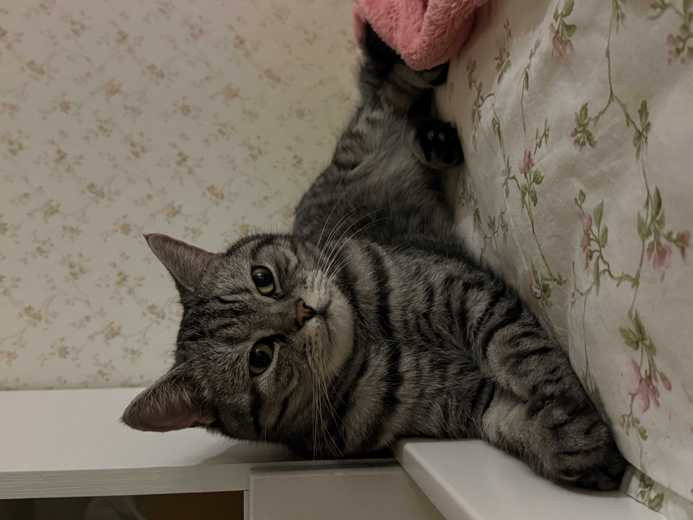
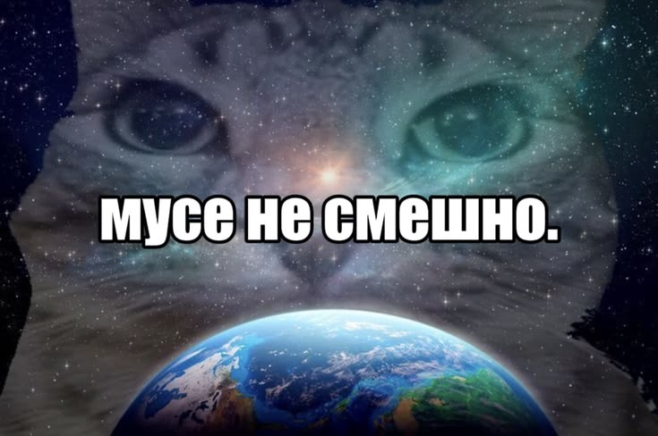
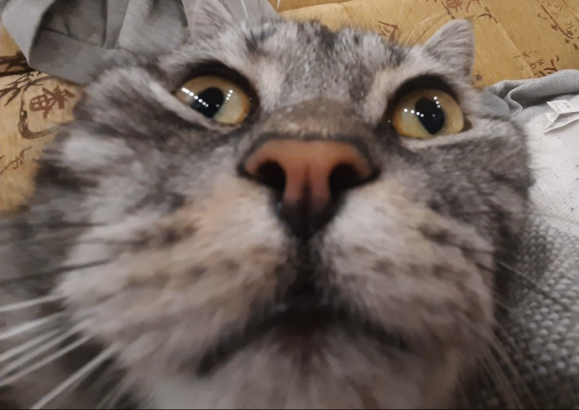
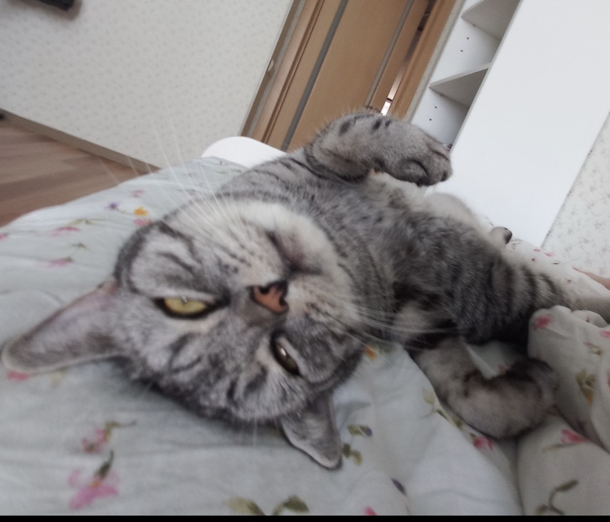
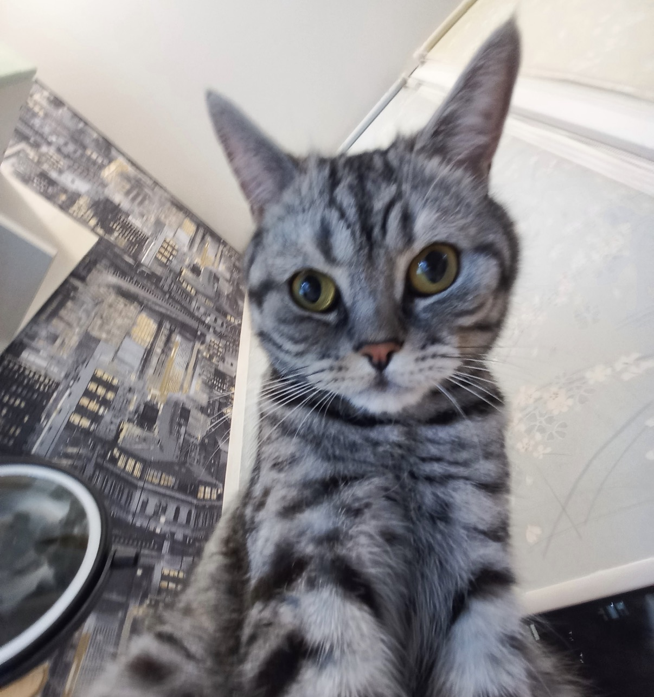
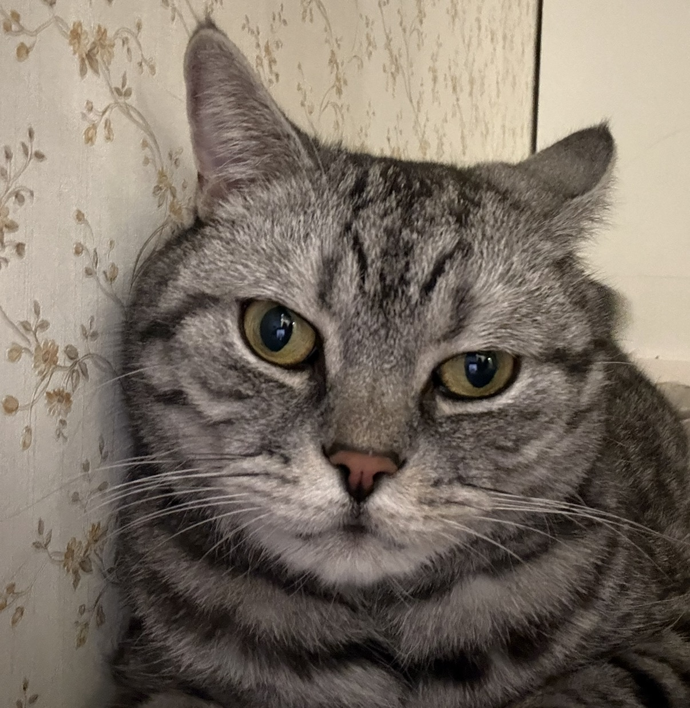

Саймон
Главный инспектор квартиры и эксперт по сну
Его рабочий график состоит из интенсивного сна, наблюдения за птицами за окном и регулярных проверок миски на предмет свежести провизии.
Обладает феноменальной способностью телепортироваться на кухню за миллисекунду до того, как дверца холодильника будет полностью открыта. В совершенстве владеет техниками вокального манипулирования.
Статистика питания за год
Официальный учет израсходованных запасов еды
| Период | Сухой (кг) | Влажный (паучи) | Лакомства | Итого (кг) |
|---|---|---|---|---|
| Зима | 6.5 | 90 | 8 | 14.5 |
| Весна | 6.0 | 85 | 6 | 13.5 |
| Лето | 5.5 | 80 | 5 | 12.5 |
| Осень | 7.5 | 100 | 10 | 16.5 |
| Итого | 25.5 кг | 355 шт. | 29 шт. | 57 кг |
Загадка природы
За прошедший год этот кот потребил около 57 килограммов еды при собственном весе всего в 5 килограммов.
Современная наука бессильна объяснить, как законы гравитации до сих пор позволяют ему грациозно ходить на четырех лапах, а не перекатываться по полу в виде сверхплотного пушистого шара.

МЭМ с котом



